Roger Federer: Serve Part 2¶
John Yandell¶
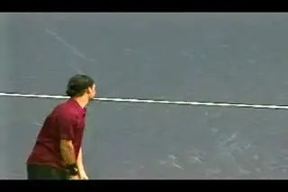
Now let's look at the toss, body turn and leg action.
In the first article on Roger Federer's serve we looked at his starting stance, his wind up, his racket drop, and the path of the racket upward to the ball. We concluded that in many aspects his serve was a better model than more exotic motions we've examined in the past, for example, Andy Roddick and Pete Sampras. (link.)
Let's keep going now and see what the high speed footage shows us about some of the other key aspects in his motion. In this second article, we'll take a look at Roger's tossing motion, how he positions the ball at contact, and his speed/spin combinations. Then we'll look at his torso rotation, his leg action and his followthrough. Again, the high speed video shows that on these elements Federer is a beautiful technical model for most severs.
Toss and Ball Position
One of the components that gives any serve its particular look and feel is the shape and timing of the tossing motion. Roger's toss is actually beautiful to watch. It's minimalistic and fluid. It creates a rhythm that carries over into the rest of his serve.
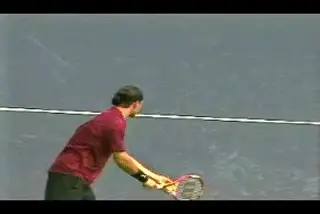
Federer's toss: minimal and rhythmic.
We saw that at the start of the motion, Federer's racket tip is pointing basically straight ahead in the deuce court, and a little to his right in the ad. His tossing arm is straight with the ball aligned with the throat of the racket. This position makes the start of the motion simple. His arms drop downward together. The tossing arm falls to the inside of his front leg and is still straight when it reaches the bottom Then the tossing arm moves immediately upward, deliberately but without being rushed.
At the start of the upward motion the tossing arm is still straight, and it stays that way all the way to the top. The release of the ball is a little above shoulder level. The arm then continues upward until it reaches full extension, pointing more or less directly upward at the sky. There is no discreet moment when Federer "throws" or "tosses" the ball.
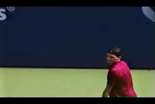
Federer's tossing arm lifts the ball as he opens his hand.
Take a close look at his hand and see how he holds the ball. Some players hold the ball on the fingertips and this is commonly taught. [But Federer cups the ball partially in the palm of his hand.] [At the release, he simply opens his hand and the rising motion of the arm lifts the toss upward into the air.] This is similar to Sampras, who holds the ball even more deeply in his palm.
Tossing Arm Angle
One of the most misunderstood aspects of the toss is the angle of the tossing arm on its way up. I was always taught that the arm should move straight down and then straight up, pointing forward at a right angle to the net on the way up. I taught that way myself for a long while, until I started filming the motions of top players. That's when I figured out that's not the way the toss really happens.
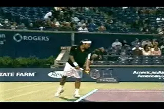
His arm drops to the inside of his leg, then comes up pointing sideways.
To my amazement, when I started looking closely at the tossing motions of the top players, I saw that on the way up the tossing arm did not point straight forward at the net. Instead the tossing arm pointed more towards the sideline. That's turned out to be true of virtually every good server, including Roger. At the time of the release, his arm is approaching parallel to the baseline, at an angle of maybe 15 or 20 degrees.
The Arc
The purpose of the "straight down, straight up" tossing motion, I was taught, was to release the ball so that it could travel directly upward in front of the server. But video shows that this isn't how the ball actually travels. Rather than traveling straight upward, the toss traveled on a curve. The actual path is on an arc moving from the players's right to his left.
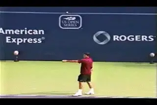
Watch the movement of the toss from the player's right to left.
This curved path is related to the position of the tossing arm. At the time of the ball release, the tossing arm points sideways. If the ball traveled straight upward it would end up so far to the right that the player couldn't possibly create the correct contact point.
Since the player releases the ball with his arm extended to his right, the ball has to travel on a curve back toward the player to reach the contact point. The width of this arc for Federer is about 2 feet. This is similar to all the other top players. So the contact point is actually an intersection of two objects moving in different directions. The racket head moving upward and somewhat to the players right, and the toss, moving to the players left but also downward.
Toss Height
If we look at the arc of the toss we can see that it not only travels from right to left, it also drops significantly before contact. Here is another common belief that is still widely taught. "Hit the ball at the top of the toss." In Federer's case the toss drops about 3 feet before contact. This is a little more than Sampras and substantially less than Roddick.
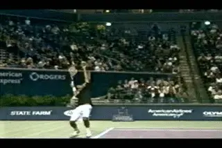
From the top of the toss, the ball drops 3 feet or so to contact.
All the top players hit the ball somewhere on the way down. No one in the modern game hits the ball at the top of the toss, and very few ever have. (link to read more about this). Roscoe Tanner is commonly pointed to as an example of a top player who hit the ball at the top. He may be the only one, unless you want to count Kevin Curren, the South African who was in the top ten in 1980's. Goran Ivanisevic is sometimes cited as a modern example of a player who hit the ball at the top, but that's not actually true. As quick as his motion was, he still hit the ball several inches on the way down. (Check it out for yourself in the Stroke Archive. link.) Among current top players, Roddick has one of the lower tosses, but it still drops well over a foot before the contact.
The Toss and Serving Rhythm
Why do top players toss above the contact point? It has to do with timing and rhythm.
[The height of the toss determines the interval the player has to hit the serve]. The higher the toss, the more total time. A super low toss doesn't give most players enough time to move through the technical positions of the motion, particularly if they have significant body rotation or use the legs much in their motion. Players with slower natural rhythms and longer backswings will also tend to add time by raising the tossing height.
[For all the elements to work together and produce the most possible racket head speed, the motion needs to be smooth and relaxed.] Every player has his own rhythm and should find the toss height that helps create that rhythm. The motion shouldn't feel rushed. It shouldn't feel like it lags at any point either. The actual rhythm can vary tremendously from player to player--from Andy Roddick to Nicolas Kiefer and everything in between.
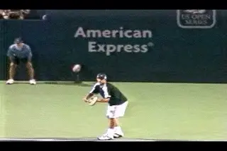
Roddick and Kiefer: the range of toss heights in pro tennis.
But doesn't a player like Kiefer with that stratospheric toss lose racket head speed by waiting for the ball? Well, I've seen him play a few times in person and he can crease 130mph on the radar gun, so I doubt it. He doesn't really pause or wait at any point in his motion. If you look at his serve, he has a very slow, deliberate windup, but he makes it to the pro racket drop position with the rest of his body in perfect position. From here his racket acceleration to the ball appears to be very similar to other top players.
The 3 Dimensional studies that I have seen to date appears to show that the racket head speed is actually fairly constant over the path of the windup. Most of the acceleration occurs in the few fractions of a second from the racket drop to the contact. This is why a higher toss and a longer, slower backswing doesn't necessarily reduce racket head speed.
When commentators say that players with higher tosses will struggle more in the wind, it seems they have a more valid point. But I recently saw Kiefer serve very effectively during hurricane-like conditions in Las Vegas. Let's just note again that virtually every great server in the history of the game hits the ball on the way down, and some, like Ivan Lendl, Boris Becker, and Steffi Graff have had ultra high tosses. If there really was some huge advantage to the low toss, it would be a commonality among top players. But it's the opposite. All the top players have high tosses, not low tosses.
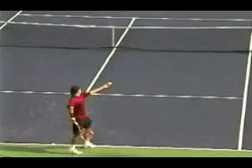
How far the ball curves back toward the server is a key to the contact point.
The Arc and the Contact Point
When players toss the ball on that arc back toward them, the curve that the ball follows determines the positioning of the contact point. The exact left to right position of the ball at contact can vary from player to player, from above the right edge of the player's head to the edge of the shoulder. This in turn has an impact on the type of spin players can produce. Players with a higher topspin component in their motion, like Pete Sampras, tend to make contact slightly further to the left--or closer to the edge of the head. Players with a larger sidespin component make contact further to the right. (link.)
Where does Roger fit in? Federer's contact point on the left to right axis, appears to be slightly further to the right than Sampras, although it is difficult to tell even in the high speed footage. The differences are relatively small and the appearance can vary with the camera angle. For example, I think I can see a light difference in the angle of the shaft of the racket between Sampras and Federer in the stills below, but if so it's a matter of a few degrees.
[Federer's contact point is probably directly above his shoulder or possibly a little to the left of that.] Note that at contact the ball is still inside or to the left of his hand. This the same for Pete. So this means there is still a topspin component. You can see this also by looking at the angle of the shaft of the racket, titled slightly to his left. This indicates that the racket is still rising at contact. The differences in this angle indicate the (relatively) small differences in the amount of topspin the player can add to the total ball rotation.
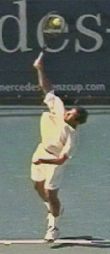
**Slight differences in the angle of the racket effect whether a player can hit\
topspin and how much.**
If you look at many lower level players at contact, the tip of the racket is pointing directly upward. This is typical if the toss is further to the right. From this position it is impossible to generate topspin and the player can only hit sidespin. You actually see this quite commonly in women's tennis. The toss and the contact point are more to the right with the tip of the racket straight up and down, or close to straight up and down at contact. Compare Lindsay Davenport and Elena Dementieva to the two men's players on this point.
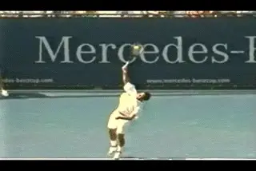
Pete's racket moves more forward toward the net. Roger's moves slightly more to the side.
Another clue to the ball position and the relationship between the contact point and the amount of topspin is the path of the racket right after the contact. Again if we compare Pete and Roger, the differences are easier to see in the few frames after contact. Look at the angle of both players' arms relatively to the baseline. Sampras's arm is pointing more forward, and less to the side or his right. Federer's arm points a little less forward more and a little more to the side.
As we saw in our heavy ball articles (link), the racket face travels on a diagonal across the face of the ball. What the video appears to show is that Pete's racket is traveling somewhat more forward an upward. Roger's is traveling slightly more across the ball. This is consistent with our theory of the ball placement on the toss and aslo with our spin data on both players, as we will see below. What the video also indicates is that the differences in the amounts and types of spin are the result of relatively small adjustments in the racket path and ball position. These are difficult to see with the video, let alone the naked eye. But they can make a big difference in the quality of the serve in terms of speed and weight.
A lot has been made of Sampras's tendency to bend the elbow soon after contact, so that the hand and racket drop at an angle to the upper arm. If we look at the difference in the path of the racket through the contact, this makes sense. Because the swing is more directly forward, and because he is so relaxed, the racket just naturally falls forward. It's not something Pete is doing, it's something that is happening as a natural consequence of the swing.
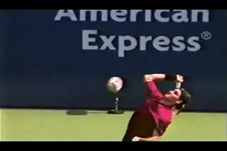
Roger averages 2000rpm on his first serve.
Spin Values
Our study of spin rates shows that Roger is generating around 2000rpm of spin on his first serve. This compares to about 2500rpm for both Sampras and Andy Roddick. So that's about 20% less total spin. If we look at the topspin component in Roger's ball, it also appears to be slightly less than Pete. Remember we saw in our heavy ball analysis that topspin is the minority component in all serves. There is no such thing as a pure topspin serve. It's a matter of the relative amount of topspin. Pete's topspin component was around 35%. For Federer and Roddick it's more like 25%. This is why slight differences in the angle and path of the racket at contact can make a big difference in the "heaviness" of the ball.
Pete has more topspin, his angle is a little steeper, the racket moves a little more forward. But the angle in Federer's racket shows that he is still hitting up at contact. The beauty of it is that Federer's ball position (or something close to it) and his motion through the contact (or something close to it) are within the reach of most players. It's not that your total spin values will equal Roger's, it's that with a similar ball position you will be able to generate a significant topspin component on your own serve.
Front to Back
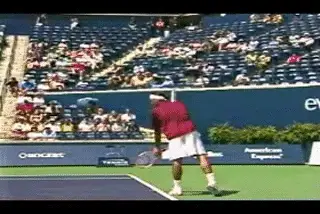
The contact is just at the front edge of the body.
There is one more important factor to consider in the placement of the toss. This is the position of the ball on the front to back axis. "Toss the ball in front of you for more power." That's another common mantra in teaching. But if we look at Federer, or any top server, we see that the contact point is barely in front of the body. If you draw a line straight down from the ball toward the court, it's roughly even with the edge of the player's face, or at most an inch or two further in front.
This makes perfect sense for a number or reasons. If the toss were significantly further in front, the player would have to reach forward with the racket. This would lower the contact point, decrease the margin of error crossing the net, and also make it more difficult to create topspin. There are other reasons the contact point is normally not as far in the court as is generally believed, which we'll discuss below when we discuss leg position.
Body Rotation
We've seen that the top players extend their tossing arms to the side and this affects the path of the toss. But why? What's the advantage of pointing the arm across the body? The answer is that the position of the tossing arm toward the sideline is related to the body turn away from the ball. This turn determines the forward body rotation in the motion. The stretch of the left arm across the body is actually similar to what happens in the preparation phase of the forehand. It creates and/or increases the shoulder turn and prepares the torso to uncoil into the shot.
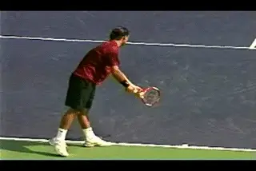
Roger turns away from the ball around 60 degrees.
When we look at Roger we can see that he has a substantial body turn. [So the more turn, the more the tossing arm is likely to point sideways.] As we have seen previously, the amount of turn is also related to the stance. Players naturally turn away from the net along the line of the stance. Watch Roger. His shoulders start roughly square to the net. As his tossing arm goes up, you can see his torso turn away from the ball, rotating back about 60 degrees. [If you draw a diagonal line across the tips of Roger's toes, and another one across his shoulders, these lines will be roughly parallel.] Imagine how awkward and restricted this move would appear if Roger was trying to point his tossing arm straight ahead at the same time.
Roger's turn is greater than Roddick's, but less than Pete Sampras's. And you can probably guess what I'm going to say next. His body turn is more reasonable for the average player to try to develop, assuming the basic elements of the swing are in place. It's reasonable, but you should probably start with an even less extreme version than Federer. You can do this by squaring the stance, or creating just a slight offset, and starting with your shoulders perpendicular to the net. From there you can gradually edge your rear foot behind you to your left. This will automatically increase the turn by changing the line along the edge of the toes.
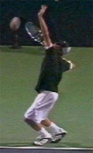
More turn than Roddick, less than Sampras
The point of turning away from the ball, obviously, is to increase the amount of torso rotation forward into the hit. Watch Federer rotate into the ball in both the deuce court and the ad court. You can almost feel the extra energy that is going into the shot. The exact degrees of rotation, as well as the speed of the torso rotation, the differences in the angles of the hips and the shoulders, are all elements that contribute to the motion, and ultimately to racket speed, ball speed, and spin.
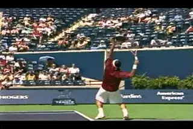
The amount of forward rotation and the exact angle at contact are natural consequences.
Analyzing them precisely as well as their interrelationships is a fascinating challenge that will undoubtedly increase our understanding the serve's bio-mechanics. The method that will allow us to see these factors more clearly--as with so many others factors in technique--is quantitative analysis. This is the work of Brian Gordon, Bruce Elliot and a few others, including TPA's own Greg Ryan. Working with Advanced Tennis, Greg has done 3-dimensional studies that we plan to report about on TPA.
The whole picture is very complex. But one belief about the torso rotation that is definitely inaccurate is the idea that the hips and shoulders should be open or parallel to the baseline at contact. Federer's shoulders and hips are at an angle to the baseline and somewhat closed, and this is the same for other top players, as we have seen in our analysis of Sampras and Roddick. We can also see that the torso is more closed in the ad court than in the deuce, something that makes sense when we consider the differences in path of the ball.
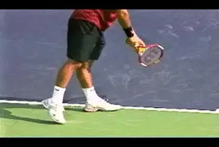
Platform stance, deep knee bend, left foot landing.
Should the average player strive to control his body rotation to match Federer's angles? The interesting thing is that the torso tends to rotate into contact naturally and automatically. If the player sets up his stance and takes a relaxed backswing, the torso tends to naturally turn away from the ball along the line of the stance. Once the turn is complete, the rotation forward should just happen as an automatic part of the motion as the racket drops and goes up to the ball and the legs uncoil. Cause and effect again? Correct.
Sometimes you see players try to force the shoulders around and end up too open at contact. This can happen when players try to serve wide in the deuce court and intentionally rotate the shoulders trying to swing the ball wide. This is also an issue with the pinpoint stance, in which the motion of the back leg can set the torso in motion and cause it to over rotate, or rotate too soon. Again, your goal should be to turn the torso onto the line of the stance during the backswing. Now key on the racket drop, the knee bend, the motion to the ball and the landing. You'll find that your torso will uncoil into the shot without further conscious effort.
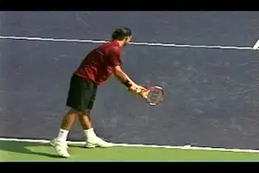
As the arms drop Pete and Roger are standing with the weight evenly distributed.
Leg Action
A major commonality in the serves of good players is the use of the legs--the deep knee bend and the front foot landing. This is another topic I've addressed in detail both in the Sampras series (link) and in the articles on the great myths in instruction (link.) There are also examples in the Stroke Archive of virtually every top server showing the knee bend, the uncoiling, and the left foot landing. As I have argued before, I think the platform stance is probably superior at the higher levels and is also much easier to master for the majority of players.
Federer is a great model here. The width of his feet in his stance is moderate, somewhat narrower than Pete's. As the arms drop it's very natural for him to bend his knees and drop his weight evenly between the feet. Like Pete, Federer keeps a lot of weight back on the rear foot as he knees go down. As his arm starts up and approaches the ball release, it's almost if he is just standing straight up and down with his weight balanced equally on each foot.
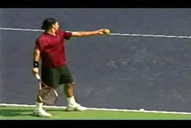
Great balance and posture at the deepest point in the knee bend.
This leads naturally into the full knee bend in a platform hitting stance. As the ball releases, Federer shifts more weight forward and his knees start to go down. The knee bend is quite deep, with his upper leg at a 30 degree angle or more to his lower leg. This is the same or maybe a little less than Sampras but more than some other great servers such as Rusedski whose knee bends are limited by the pinpoint stance.
Look at Roger's balance at the deepest point of the bend. His weight has shifted forward but it definitely not completely on the front foot. His posture is still great He just looks balanced and strong. As we saw in the Sampras articles, the alleged "arch" of the back in this part of the motion is an illusion. As his knee bend deepens, the torso just naturally inclines backwards at an angle. But look how the hips and shoulders stay in line. Note also that the completion of the knee bend coincides quite closely with the point of maximum body turn away from the ball.
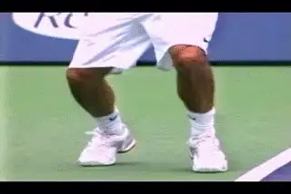
The leg drive from the front foot creates air.
As the racket drops, the weight shift continues onto the front foot. Roger comes up on his back toes, and then his rear foot leaves the court. As we saw in our analysis of the stances, the majority of the push or drive in a platform stance is coming from the front leg. The rear foot is literally being pulled off the court. The leg drive off this front foot is very powerful. Look how far he explodes upward. That is definitely a lot of air. It is significantly more than Roddick or Pete, this is with the same or less knee bend. We noted that Roger's racket drop isn't quite as deep as these players, but he may be making up for it partially through the explosiveness of his legs.
[Like virtually every top player, Federer lands on his left front foot.] Watch how he actually lands partially on the baseline, although on other balls he may land a few inches inside the court. More on this below. As he lands, his right leg kicks back in the other direction. The lower leg comes up until it is at about parallel to the court or a little higher. Here, once again Roger takes the middle path. His kick back with the opposite leg is a little more than Sampras but less than Roddick.
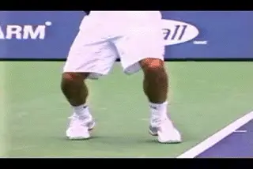
The front foot landing with the back leg kicking back.
Landing
As he gets up into the air look how beautifully he retains his posture! He is still almost completely straight up and down with his body in line from the tips of his shoes to the tip of his racket. It looks like he is defying gravity because he lifts off the court so easily.
Now watch Roger's incredible balance on his landing. Far and away Roger lands with the best posture of any of the top pros. Every player lands leaning forward to a certain extent, including Roger. But Roger is the closest to truly straight up and down. Body position and balance is critical on the landing is because of the speed of the ball in the modern game. The server hits a 130mph first serve and lands inside the court with one foot in the air. The returner rockets a 95mph return. How quickly can the server recover in order to hit the first ground stroke in the rally?
We saw above that Roger lands at most a few inches inside the court or even with his heel still on the baseline. He's almost completely upright which allows him to recover his balance, split, and better ready for the first ball.
What about that landing when it comes to the serve and volley? Isn't one of the basic precepts of serving to drive your weight into the ball and land as far forward into the court as possible to get to the net more quickly? I heard that a lot as a junior player. A tour player I know recently went to work on his serve and volley with a coach who was a former top 10 player in the world. The coach advised him to try get further into the court both at contact and at the landing, so he could get closer to the net. Out of curiosity I pulled some video of the coach in a pro tournament match and found that he himself landed only a few inches inside the line.
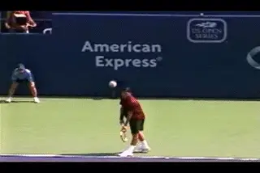
A balanced landing means that Roger is ready to play.
If you look at Sampras, or Rusedski, you'll see the same. In the modern game, when the player's serve and volley they land on the front foot, take 1 or occasionally 2 more steps, then split step for the first volley. That's what puts the premium on the landing. You've probably heard that you should try to reach the service line to hit the first ball. But in pro tennis that doesn't happen. The top players are all hitting the first volley roughly half way between the baseline and service line. Ironically. a player like Roddick who never serves and volleys usually lands more inside the court--and more off balance--than players like Federer or Sampras.
Followthrough
Finally, let's take a look at the followthrough on Roger's motion. Again it's a great model because it is so natural, fluid, and relaxed. Watch how his arm continues to flow after the completion of the pronation, moving forward and then from the right back to the left. His racket hand passes in front of his left leg and then actually continues to move across his left side and upwards and behind him to about waist level. At that point Roger catches the racket with his left hand to begin his recovery to the ready position.
When Pete Sampras was at the top, a lot of players and coaches made a big deal out of the fact that at least on some serves, Pete seemed to finish on the right side of his body. That was actually quite rare, but it was true that his finish was shorter than most players, and that his racket hand tended to end up in line with his right leg, not his left. A lot of players tried to copy that right side finish without having the other elements that actually made it happen. These include an extreme left ball position, and the racket motion more directly forward and outward toward the net and less from left to right.
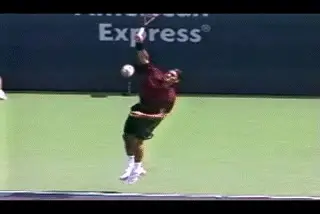
A full, flowing followthrough is definitely something to model.
That finish is the exact opposite of Roger. Remember what we saw about Roger's ball position? His arm and racket move more from left to right. Because he is so relaxed his arm just naturally swings back across his body to the left. The followthrough is one more thing we can all learn from Roger. Most players are too tight all the way through the motion, including the finish. But it would be impossible to stay tense and make that finish position.
So that takes us all the way through Roger's service motion. It may not be as flashy as Andy Roddick. But you could certainly argue that it is as effective or more effective as part of his incredible all court game. That's a game we can all aspire to play at some level to a greater or lesser extent. And the serve is a good place to start.

John Yandell is widely acknowledged as one of the leading videographers and students of the modern game of professional tennis. His high speed filming for Advanced Tennis and TPA have provided new visual resources that have changed the way the game is studied and understood by both players and coaches. He has done personal video analysis for hundreds of high level competitive players, including Justine Henin-Hardenne, Taylor Dent and John McEnroe, among others.
In addition to his role as Editor of TPA he is the author of the critically acclaimed book Visual Tennis. The John Yandell Tennis School is located in San Francisco, California.